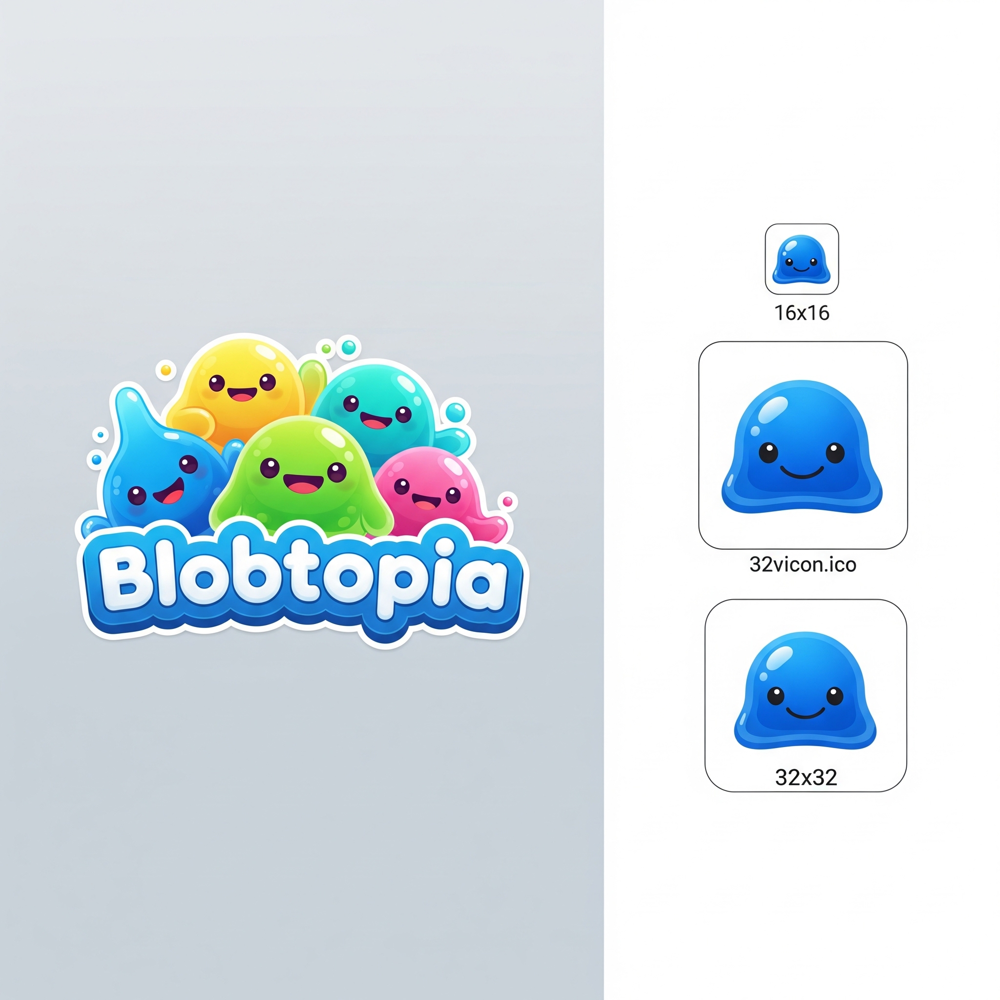

Karla Tropfstein @karla_iz11:02
Schon wieder Sonderschicht. Und die da oben reden vom „Aufschwung“. Für wen denn?? #Industriezone
24↻ 7 weitergeblubbert


| lfd | welle | gewicht | vertrauen | alter | name | vermerk |
|---|---|---|---|---|---|---|
| 031 | 3 | 1,08 | 6 | 44 | K. Tropfstein | |
| 058 | 3 | 0,94 | 3 | 61 | O. Mooswald | |
| 094 | 3 | 1,08 | · | 37 | R. Schattig | VERWEIGERT |
| 112 | 3 | 0,94 | 8 | 52 | B. Glanzberg | |
| 145 | 3 | 1,21 | · | 29 | M. Wellenbrecht | WEISS NICHT |
| 166 | 3 | 1,21 | — | — | P. Funkenflug | NICHT ERREICHT |
| 167 | 3 | 0,94 | 5 | 48 | H. Mooswald | |
| 188 | 3 | 1,08 | — | — | T. Nebelgrau | PANEL-AUSFALL |
| 203 | 3 | 0,94 | 7 | 55 | S. Silberzahn | |
| 219 | 3 | 1,08 | 4 | 33 | F. Wirbelwind | |
| … 132 weitere Zeilen … | ||||||